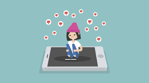
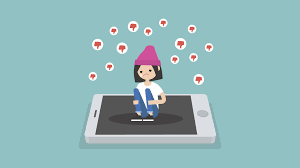

It should come as no surprise that the pressure to be available 24/7 on social media is a very real challenge for today's teenagers. Aside from the fact that their grasp of and dependence on social media far exceeds that of many adults, they also are using social media at much greater rates too. In fact, a report by Common Sense Media found that 75 percent of American teenagers have social media profiles. Social media is a daily part of life for the vast majority of teens. Click here for more information on the connecton between depression and social media.
What Impact Does Social Media Have on Mental Health?
Undoubtedly, social networking plays a vital role in broadening teen social connections and helping them learn valuable technical skills. But what impact is all of this social networking having on young teen minds? Most reports indicate that the impact can be significant.
Not only are teens' developing brains vulnerable to so much time online, but because they often have difficulty self-regulating their screen time, their risks can increase. Additionally, they are more susceptible to peer pressure, cyberbullying and sexting—all activities involving digital communication—making navigating the online social world treacherous at times.
All in all, there are a number of health issues that develop as a result of too much time online. Here is an overview of the most common mental health-related issues teens can experience from too much social media use.
Depression
Researchers are just beginning to establish a link between depression and social media. While they have not actually discovered a cause and effect relationship between social media and depression, they have discovered that social media use can be associated with an intensification of the symptoms of depression, including a decrease in social activity and an increase in loneliness.
For instance, a study published in Computers in Human Behavior found that the use of multiple social media sites is more strongly associated with depression than the amount of time spent online. According to the study, people who used more than seven social media platforms had more than three times the risk of depression than people who used two or fewer sites.
What's more, several additional studies have shown that the prolonged use of social media may be related to the signs and symptoms of depression as well as low self-esteem, especially in children.
Anxiety
Teens often feel emotionally invested in their social media accounts. Not only do they feel pressure to respond quickly online, but they also feel pressure to have perfect photos and well-written posts, all of which can cause a great deal of anxiety. In fact, some studies have found that the larger a teen's social circle online the more anxiety they feel about keeping up with everything online.
It takes a lot of time and effort to keep up with the unspoken rules and culture of each social media platform. As a result, this puts additional pressure on teens, which can cause feelings of anxiety.
Additionally, if teens commit a faux pas online, this also can be an extreme source of anxiety. Many teens, especially girls, are prone to worry about what others might think of them and how they will respond when they see them next. Then factor in cyberbullying, slut-shaming, and other mean online behaviors and you can see why social media is a very real source of anxiety for many teens.
Sleep Deprivation
Sometimes teens spend so many hours on social media that they begin to lose valuable sleep. Consequently, this sleep loss can lead to moodiness, a drop in grades, and overeating, as well as exacerbate existing problems like depression, anxiety, and ADD.
In fact, one British study published in the Journal of Youth Studies surveyed 900 teens between the ages of 12 and 15 about their social media use and its impact on sleep. What they found was that one-fifth of the teens said they "almost always" wake up during the night and log in to social media. The study also revealed that girls were significantly more likely than boys to wake up and check social media on their phones.
In addition to reporting feeling tired all the time, they also reported being less happy on average than teens whose sleep was not disturbed by social media. What's more, teens need more sleep than adults do, so logging into social media in the middle of the night can be detrimental to their physical health as well. For instance, aside from feeling tired and irritable, lack of sleep can lower the immune system and make it more likely for a teen to get sick.
Envy
Jealousy and envy—while normal emotions—can wreak havoc on teen brains if they dwell on what someone else has possessed or has experienced, that they themselves have not. And because people tend to post only the positive things that they experience, or make light of the bad with funny little anecdotes, it can appear to the reader that other people lead more exciting lives than they do.
Unfortunately, what teens often do not realize is that people tend to only post their "highlight reel" on social media and often keep the mundane or difficult experiences off the Internet. As a result, another person's life may look perfect online, but offline they have struggles just like anyone else.
Still, it is easy for a teen to play the comparison game and start thinking that everyone is happier or better off than she is. As a result, this can feed into depression, loneliness, anger and a variety of other issues. What's more, envy, if not dealt with, often leads to bullying and mean behavior. In fact, many mean girls target others because they are jealous of the target's clothes, boyfriend, successes, or any number of other things.